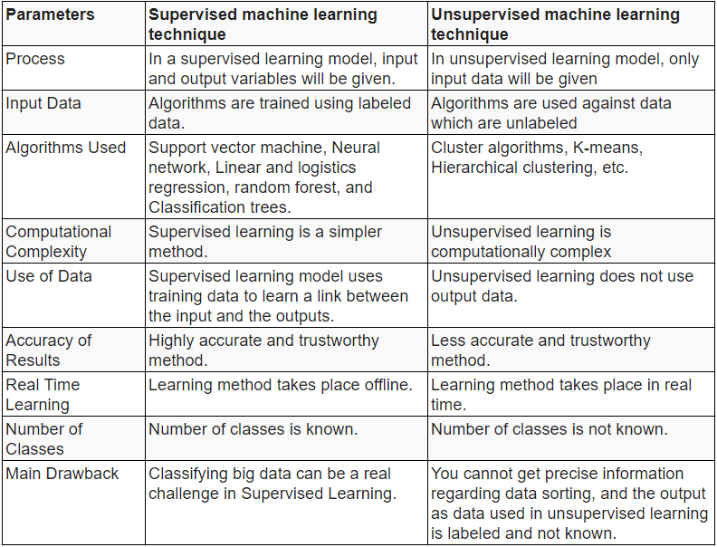

AI Concepts
1. HIERARCHICAL PLANNING
Hierarchical planning is a planning methodology that entails grouping tasks and actions into several abstraction levels or hierarchies, with higher-level jobs being broken down into a series of lower-level tasks. It offers a method for effectively using a hierarchy of goals and sub-goals to reason and plan in complex contexts.
AI systems can effectively handle complicated tasks and surroundings because of hierarchical planning, which enables them to make decisions at many levels of abstraction. Compared to flat planning systems, which treat tasks at the same level of abstraction, this approach differs. AI systems can efficiently handle relationships, prioritize tasks, and distribute resources thanks to the structured method of hierarchical planning, which makes it very useful in complicated contexts.
Hierarchical Planning Techniques in AI:
- Hierarchical Task Network Planning (HTN): Breaks down complex tasks into simpler ones using hierarchical structures, like a flowchart. This makes complex planning easier.
- Hierarchical Reinforcement Learning (HRL): Helps AI agents learn in complex situations by creating a hierarchy of goals and learning how to achieve each goal at different levels. This makes learning faster.
- Hierarchical Task Networks (HTNs): Organize tasks into a hierarchy, making planning and execution more efficient.
- Hierarchical State Space Search: Explores the possibilities of a problem in a hierarchical way, making the search process faster.
Example: Hierarchical Planning in Autonomous Driving
Let’s consider an example of autonomous driving car, here hierarchical planning is employed in the following manner:
1. High-Level Goal: Safely navigate from A to B, following the traffic rules
2. Major Steps:
- Route Planning: Determine optimal route to B
- Obstacle Avoidance: Identify obstacles like vehicle, people, etc.
- Traffic Signal Recognition: Detect traffic signals and signs
- Lane Keeping: Stay in the designated lane and adjust the vehicle’s position to avoid collision
3. Minor Steps:
- Route Planning:
- Map Analysis: Analyze maps to find the optimal route
- Traffic Prediction: Predict traffic patterns to avoid traffic jams.
- Obstacle Avoidance:
- Sensor Data Processing: Process the data from onboard sensor to detect nearby objects
- Path Planning: Generate paths to avoid obstacles
- 4 Traffic Signal Recognition:
- Image Recognition: Analyze images to detect traffic lights
- Traffic Rule Interpretation: Interpret and detect signal to determine the action
- 5 Lane Keeping:
- Lane Detection: Use computer vision algorithms to detect lane markings
- Control Systems: Adjust the speed, steering, break command to keep the vehicle within the detected lane
2. REASONING IN AI
Reasoning is the process of drawing logical conclusions and making predictions based on available information/knowledge.
It is essential in AI to enable machines to think and act like humans.
Types of Reasoning
In artificial intelligence, reasoning can be divided into the following categories:
- Deductive Reasoning: Moves from general to specific. It starts with a general rule and applies it to a specific situation to draw a conclusion. For example, if all birds have feathers, and a robin is a bird, then we can deduce that a robin has feathers.
- Inductive Reasoning: Moves from specific to general. It starts with specific observations and makes a general conclusion. For example, if every time we see a swan, it is white, we might conclude that all swans are white. However, this conclusion might not be true if we later see a black swan.
- Abductive Reasoning: Starts with incomplete information and makes the most likely conclusion. For example, if we see wet grass, we might abductively conclude that it rained, even though there could be other explanations, such as a sprinkler.
- Common Sense Reasoning: Based on everyday knowledge and experience. For example, if we see a glass on a table, we might assume that it is there to be picked up and used for drinking.
- Monotonic Reasoning: Based on the principle that new information does not change existing conclusions. For example, if we know that all mammals are warm-blooded, and we later learn that a whale is a mammal, we can conclude that a whale is warm-blooded without changing our existing knowledge.
- Non-monotonic Reasoning: Based on the principle that new information can change existing conclusions. For example, if we know that birds can fly, and we later learn that a penguin is a bird, we might need to retract our conclusion that all birds can fly.
3. STATE-SPACE SEARCH
State-space search explores the state space by generating and considering successive states until reaching the goal state. Examples include Breadth-First Search, Depth-First Search, A* Search, and Greedy Best-First Search.
example
Types of State-Space Search:
Forward (Progression) State-Space Search: Explores the state space from the initial state to the goal state.
- Initial State: Start from the initial state and explore possible actions that can be taken.
- Action Application: Apply actions to the current state to generate new states.
- State Evaluation: Evaluate each new state to check if it is the goal state or not.
- Iterative Process: Repeat steps 2 and 3 until the goal state is reached or all possible actions have been explored.
Backward (Regression) Relevant-States Search: Starts at the goal state and applies actions backward until reaching the initial state.
- Goal State: Start from the goal state and identify the actions that can lead to it.
- Action Selection: Select actions that are relevant to the goal state and apply them in reverse order.
- State Generation: Generate new states by applying the selected actions to the current state.
- Iterative Process: Repeat steps 2 and 3 until the initial state is reached or no more relevant actions can be found.
4. DECISION TREE
A decision tree is one of the supervised machine learning algorithms. This algorithm can be used for regression and classification problems — yet, is mostly used for classification problems. A decision tree follows a set of if-else conditions to visualize the data and classify it according to the conditions.
Important Terminology:
- Root Node: This attribute is used for dividing the data into two or more sets. The feature attribute in this node is selected based on Attribute Selection Techniques.
- Branch or Sub-Tree: A part of the entire decision tree is called a branch or sub-tree.
- Splitting: Dividing a node into two or more sub-nodes based on if-else conditions.
- Decision Node: After splitting the sub-nodes into further sub-nodes, then it is called the decision node.
- Leaf or Terminal Node: This is the end of the decision tree where it cannot be split into further sub-nodes.
- Pruning: Removing a sub-node from the tree is called pruning.
5. DIFFERNCE BETWEEN SUPWERVISED AND UNSUPERVISED LEARNING
